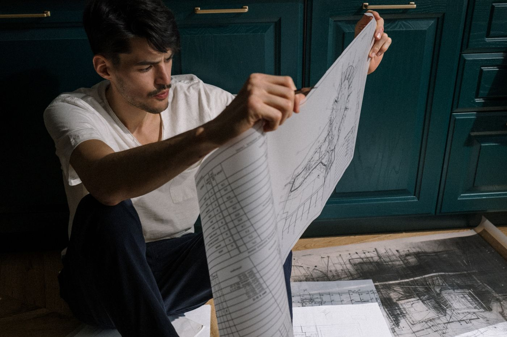
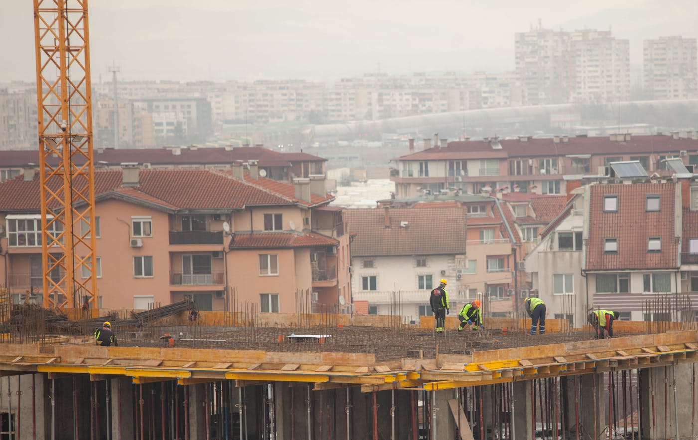

Quick answer: Custom home builders in Kew work within one of Melbourne’s most heritage-dense planning environments. Most of Kew sits under Heritage Overlay, which means demolition and new construction require a planning permit from Boroondara Council — separate from and issued before the building permit. Construction costs for a well-specified custom home in Kew run $4,000–$6,500 per m² in 2026. All-in on a typical knockdown-rebuild — including land — the number typically sits between $3M and $5M. A realistic timeline from brief to handover is 20–30 months.
There is a version of “custom home builder” that starts with your brief, your block, and a blank sheet of paper. There is another version that starts with a catalogue and works backwards from there. The brochures produced by both are equally beautiful. The results are not.
[Right. Straight face now.] In Kew, the distinction matters more than in most Melbourne suburbs. Heritage Overlay restrictions, reactive clay soils on the flats, basalt rock on the ridge, and a planning permit process that can run past 12 months on contested applications mean that not all builders are equipped for the work. This guide covers what Kew specifically demands from a custom builder, what it costs in 2026, and the circumstances in which a custom build is genuinely the wrong choice.
- What a custom builder actually does
- Kew’s building landscape in 2026
- Heritage Overlay — what it means for your build
- Planning permit vs building permit: the Victorian approval path
- Soil conditions and foundation costs in Kew
- What a custom build costs in Kew in 2026
- The realistic timeline
- When not to hire a custom builder
- Questions to ask before you sign
- FAQ
What a Custom Builder Actually Does
A custom home builder in Kew manages the full process from initial design through to handover: engaging an architect or building designer, coordinating structural engineers, heritage consultants (frequently required here), geotechnical specialists, and energy assessors, obtaining planning and building permits, and delivering construction under a formal contract — typically HIA or MBA.
The alternative is a volume or project builder: pre-designed floor plans, limited site-specific adaptation, lower cost per square metre on uncomplicated blocks. For a straightforward flat lot without planning complications, the volume path delivers reasonable value. For a Kew block with a Heritage Overlay, reactive clay foundations, and a brief that requires responding to an Edwardian streetscape, the volume path is simply the wrong instrument.
The most reliable indicator of a genuine custom builder: they ask about your site before they show you anything at all. If a builder’s first communication is a brochure, you have received all the information you need about their process. Take the brochure — it’s usually quite nice — and adjust your expectations accordingly.
Kew’s Building Landscape in 2026
Kew sits approximately 5km east of Melbourne’s CBD, within the City of Boroondara. The suburb’s residential character is dominated by Victorian, Edwardian, and interwar housing — California bungalows, clinker brick homes, Federation-era residences — on blocks that typically run 700–1,000m² on the flats and extend to 1,200m²+ on the elevated western ridge along Victoria Avenue and Glenferrie Road.
That housing stock is ageing, and a significant portion of it is functionally misaligned with how people want to use a home in 2026. The bones are frequently excellent — good setbacks, mature trees, generous proportions. The floor plans, thermal performance, and building services generally are not. This creates sustained demand for substantial renovations and knockdown-rebuilds across the suburb.
Kew’s school zones — which include Ruyton Girls’ School, Trinity Grammar, Xavier College, and Genazzano FCJ College — generate consistent family demand that keeps the suburb performing well on fundamentals. Buyers who pay a premium to be in this postcode are rarely satisfied with the original structure on the land. They are not renovating 1955. They are building 2026.
What Kew has in abundance, and what sets it apart from many Melbourne suburbs: owner-builders and design enthusiasts who want to be meaningfully involved in the design process — not simply selecting from a finishes schedule. Custom builders who run proper design workshops and keep clients engaged across the full specification process do well here. Builders who expect passive sign-offs do not.
Heritage Overlay — What It Means for Your Build

Photo via Pexels
This is the section most guides about Kew skip entirely. We are not most guides.
Much of Kew falls under Heritage Overlay (HO) as defined in the City of Boroondara Planning Scheme. Heritage Overlay is not a historical designation — it is an active planning control that determines what can and cannot be done with a property. The implications for custom home builders are significant and, on some sites, define the entire project structure.
In a Heritage Overlay area, you typically need a planning permit to:
- Demolish or remove a building
- Construct a new dwelling on a cleared site where the original building has heritage significance
- Carry out external alterations or additions visible from a public road
- Subdivide the land
What Heritage Overlay does not mean: it does not automatically prevent you from building something contemporary. A well-designed custom home can be approved in a heritage area — Boroondara Council assesses whether new construction respects the character of the streetscape, not whether it replicates period architecture exactly. Experienced architects know how to design respectfully contemporary buildings that satisfy heritage requirements without compromising the brief.
A heritage impact statement, prepared by an accredited heritage consultant, is required with every planning permit application in a Heritage Overlay area. These reports add $3,000–$8,000 in professional fees and extend the planning permit assessment timeline. Heritage applications are also more likely to attract objections from neighbours and more likely to be referred to VCAT (Victorian Civil and Administrative Tribunal) on appeal.
Before you brief anyone, confirm whether your specific property is covered by Heritage Overlay. Check the City of Boroondara Planning Scheme map via the Victorian Planning Portal or directly through Boroondara Council’s heritage pages. Five minutes. Discovering a Heritage Overlay after you have paid for concept design is an expensive way to learn the same information.
Planning Permit vs Building Permit: the Victorian Approval Path
In Victoria, new residential construction typically requires two separate approvals. They are frequently confused in client conversations, and the confusion costs time.
Planning permit: Issued by the local council — Boroondara Council for Kew. Required when proposed works need assessment against planning scheme provisions, including Heritage Overlay, Neighbourhood Character Overlay, Vegetation Protection Overlay, or where the scale of the project departs from permitted development standards. This is the council assessment process and the one that takes meaningful time. Standard residential planning permits in Boroondara run 3–9 months. Heritage applications often run longer, particularly if VCAT becomes involved.
Building permit: Issued by a registered building surveyor — either the council’s own surveyor or a private building surveyor you appoint. Required for all construction work above prescribed thresholds, regardless of whether a planning permit is also needed. Assesses compliance with the National Construction Code and Victorian Building Regulations. Issued separately from and after the planning permit. For standard residential work, typically 2–4 weeks from application.
The common misconception: that obtaining a planning approval means construction can proceed. It does not. A planning permit grants permission for the use and development; a building permit confirms the construction complies with the NCC. Both are required before excavation begins.
Not every Kew property requires a planning permit. Some works on unrestricted land fall within permitted development rights under ResCode. An experienced building designer or town planner can assess your specific site and brief in the first meeting. For a comparison of how NSW handles the equivalent process, see our post on custom home builders in Carlingford, which covers DA vs CDC in detail.
Soil Conditions and Foundation Costs in Kew
Kew sits across two distinct geological zones that create different foundation challenges — and different budget implications.
The lower, flatter areas — around Cotham Road, Studley Park Road, and the river flats near the Yarra — have reactive clay soils classified as Reactivity Class M or H1 under AS 2870. Reactive clay expands and contracts with moisture variation, placing loads on slab foundations that must be specifically accommodated in the structural design. On flat sites with good drainage management, this adds $20,000–$45,000 to foundation costs compared to a non-reactive site.
The elevated western ridge — around Victoria Avenue, Molesworth Street, and Sackville Street — frequently encounters basalt rock at shallow depth. Rock excavation costs $200–$350 per cubic metre versus $40–$80 per cubic metre for soil. A site that appears straightforward on the surface can add $40,000–$100,000 to the foundation budget once rock is encountered during excavation.
A geotechnical soil test ($1,500–$3,000) before design begins gives the structural engineer the data needed to specify the right foundation system — raft slab, pier-and-beam, or piled construction. Without it, the structural engineer works from conservative assumptions (which are more expensive), or the site conditions arrive as a variation mid-excavation (which costs more than the test would have). On a project of this value, the geotechnical report is not optional.
What a Custom Build Costs in Kew in 2026

Photo via Pexels
Construction costs for a custom home in Kew in 2026 sit across three tiers, driven by specification, architectural complexity, and site conditions. These figures are for construction only.
| Specification | Cost per m² (construction only) |
|---|---|
| Well-specified custom | $4,000 – $6,500 |
| Architectural / premium custom | $6,500 – $9,000+ |
| Heritage restoration / complex structural | $7,000 – $12,000+ |
A 300m² home at well-specified custom tier runs $1.2M–$1.95M in construction costs before anything else is added.
What gets added:
- Demolition and site clearing: $25,000–$65,000
- Geotechnical soil test: $1,500–$3,000
- Heritage impact statement (if applicable): $3,000–$8,000
- Architect or building designer fees: $80,000–$180,000+
- Structural engineering, energy assessments, surveys: $20,000–$40,000
- Planning permit application and council fees: $5,000–$20,000
- Landscaping, pool, driveway, fencing: $80,000–$200,000+
- Land in Kew (700–900m²): $2,000,000–$3,500,000+
A typical Kew knockdown-rebuild — land included — lands between $3M and $5M for a well-specified result. At architectural specification with a pool and substantial landscaping on a well-positioned block, the number moves north of $5M. Land (which in Kew requires no further comment) is the dominant cost variable in every scenario.
The sum that most consistently surprises people is not the construction cost — it is the non-construction costs. Architect fees, heritage consultant, geotechnical report, structural engineer, energy assessor, council contributions, and landscaping regularly account for $250,000–$450,000 before a slab is poured. Budget for this explicitly before briefing anyone. It is not a surprise. It is arithmetic.
The Realistic Timeline

Photo via Pexels
| Phase | Duration |
|---|---|
| Site assessment, heritage check, feasibility | 3–6 weeks |
| Design and documentation | 3–6 months |
| Planning permit — standard residential | 3–9 months |
| Planning permit — Heritage Overlay application | 6–15 months |
| VCAT hearing (if contested) | add 6–18 months |
| Building permit | 2–4 weeks |
| Construction — single storey | 10–14 months |
| Construction — double storey | 12–18 months |
From first conversation with a builder to handover, a typical Kew custom build takes 20–30 months. Builds on heritage-affected land that encounter planning complications — objections, VCAT hearings, amended applications — regularly run 30–40 months. The planning system does not bend to construction schedules.
The phase that most consistently surprises clients is the planning permit, not the construction. A 3-month planning timeline is achievable on simple unrestricted land. A Heritage Overlay application in Boroondara with one objecting neighbour can consume 12–18 months without anyone doing anything wrong. Budget time accordingly. For how planning timelines compare to the NSW approval process, see our guide to custom home builders on the North Shore.
When Not to Hire a Custom Builder
This section is the one most guides skip. We are not most guides.
Do not engage a custom builder if your budget for construction is under $900,000. The overhead structure of a genuine custom build — dedicated project management, heritage consultant coordination, architect collaboration, bespoke procurement — requires a minimum project scale to function economically. Below $900,000 in construction costs, that overhead compresses margins to the point where something gives. It is usually not the overhead.
Do not engage a custom builder if your site is a clean, flat, Heritage Overlay–free block and your brief is a standard four-bedroom home with an open-plan kitchen-living and a double garage. A volume builder will deliver this faster, at a lower cost per square metre, with a clearer quote and less ambiguity across the process. Custom complexity is not a feature on a standard brief — it is unnecessary friction.
Do not engage a custom builder if you have a firm move-in deadline within 18 months. Planning permits alone in Boroondara take 3–9 months on straightforward applications. Heritage Overlay applications regularly run longer. None of this is within the builder’s control. If you have a hard date — a lease expiry, a school enrolment, a commitment you have made — the custom build path on most Kew sites cannot reliably meet it.
Do not engage a custom builder if you cannot commit 30–50 hours of active client involvement across a design and specification process running 3–6 months. Custom builds require decisions. Many of them, at regular intervals. If your schedule genuinely cannot accommodate this, decisions stall, the programme slides, and the cost of that delay arrives on your next progress claim — usually without warning and always at the worst possible moment.
Questions to Ask Before You Sign
Do this before the first phone call, not after you have had three excellent meetings and are attached to the renders.
- Are you registered as a domestic builder in Victoria? Confirm the registration number on the Victorian Building Authority (VBA) register. The registration should be current, cover domestic building work in the appropriate class, and be held by the legal entity that will sign your contract — not an individual who left the company 18 months ago.
- Do you carry domestic building insurance for this project value? In Victoria, domestic building insurance is mandatory for construction contracts over $16,000 where a deposit is collected. Ask for evidence of current insurance before any contracts are signed. A builder who cannot produce it promptly is providing information.
- Have you built on a Heritage Overlay block in Boroondara in the last three years? This is not a general heritage question. Heritage experience in one council does not transfer directly to another — planning officers, assessment timeframes, and heritage advisor expectations vary. Ask for specific project references in Boroondara, then follow up with those clients.
- Who manages the project day to day during construction? Some custom builders put a dedicated site supervisor on your project. Others rotate supervisors across multiple concurrent sites. The difference in communication quality, defect management, and your sanity over 12–18 months is not small. Meet the supervisor before you sign.
- Can I speak with your last three clients directly? Ask for contact details of three recent clients with comparable projects. The right builder provides them without hesitation. Any reluctance is also an answer.
- How do you handle variations, and can I see the variation clause before signing? Every custom build has variations. Variations should be documented and signed off in writing before work proceeds — not reconciled at the end of the project. Read the clause before execution.
Six questions. Not unreasonable for a commitment of $3M or more. For a broader framework on vetting custom builders — including licence checks and reference verification — see our guides on architectural custom builds in Sydney’s Eastern Suburbs and custom home builders on the Northern Beaches.
FAQ
How much does it cost to build a custom home in Kew Melbourne?
Construction costs for a well-specified custom home in Kew run $4,000–$6,500 per m² in 2026. A 300m² home at mid-specification runs $1.2M–$1.95M in construction costs alone. All-in on a typical Kew knockdown-rebuild — including land, design fees, heritage consultant, structural engineering, council contributions, and landscaping — the total typically sits between $3M and $5M. Land in Kew (700–900m²) runs $2M–$3.5M+ and is the dominant cost variable in every scenario.
What is Heritage Overlay in Kew and how does it affect my build?
Heritage Overlay is an active planning control in the City of Boroondara Planning Scheme that applies to properties and areas with heritage significance. Under a Heritage Overlay, you typically need a planning permit to demolish a building, construct a new dwelling, or carry out external works visible from a public road. A heritage impact statement prepared by an accredited consultant is required with every application. Heritage permits take longer to assess and are more likely to be referred to VCAT on appeal. Confirm whether your property is covered on the Victorian Planning Portal before you brief a designer — ideally before you finalise any purchase.
Do I need a planning permit for a custom home in Kew?
Most custom home builds in Kew require a planning permit from Boroondara Council. The permit is required for demolition or new construction in Heritage Overlay areas, for sites with Neighbourhood Character Overlays, or where the proposed design departs from ResCode provisions on setbacks, height, or site coverage. A planning permit is separate from and issued before the building permit. Your building designer or architect can confirm whether one is required for your specific site in the first meeting.
How do I check if a builder is licensed in Victoria?
Search the Victorian Building Authority (VBA) register by the builder’s name or registration number. Confirm the registration is current, covers the appropriate category of domestic building work, and is held by the legal entity that will sign your contract — not an individual who has since departed. Also search VCAT Decisions for any domestic building disputes — a pattern of appearances is more telling than any single outcome.
How long does it take to build a custom home in Kew Melbourne?
A typical Kew custom build takes 20–30 months from first meeting with a builder to handover. The planning permit phase runs 3–9 months for standard residential applications and 6–15 months or more for Heritage Overlay applications. If a heritage application is referred to VCAT, the planning phase alone can exceed 18 months. Construction for a double-storey home typically runs 12–18 months once all permits are issued.
Is a knockdown rebuild possible in Kew if my property has Heritage Overlay?
In many cases, yes — but it requires a planning permit from Boroondara Council that specifically approves demolition of the existing building. Council assesses whether the building is locally significant and what the impact of its removal would be on heritage character. Properties individually listed as significant heritage items are considerably harder to demolish than those covered by a general area Heritage Overlay. An architect experienced in Boroondara heritage applications can advise on the likelihood of approval before you commit to design costs.
What council is Kew in?
Kew is within the City of Boroondara. Boroondara Council manages planning permit applications, Heritage Overlay assessments, and development contributions for properties in Kew. The council maintains the interactive planning scheme map showing which overlays apply to each property. Boroondara has one of the most extensive Heritage Overlay systems among Melbourne’s inner-east councils — checking the map before purchase, not after, is the correct order of operations.